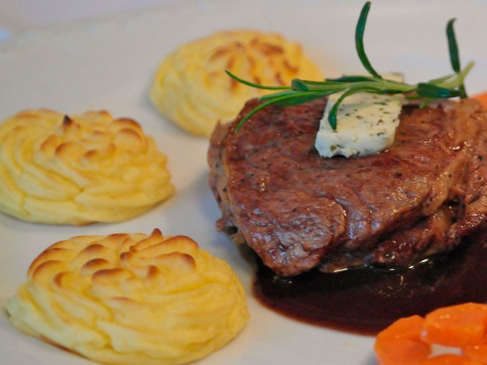
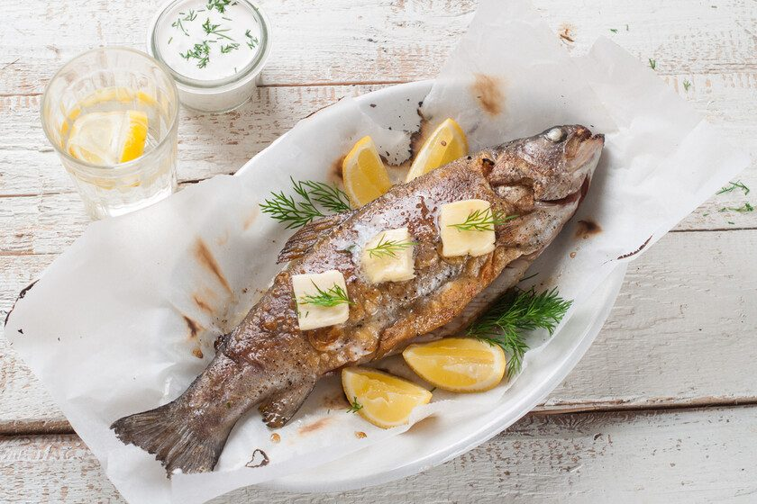

Especialidad en carnes de monte.
Cocina tradicional.
Se entra por las escaleras que bajan del mercado, en la calle peatonal.
Carta
Precios con IVA incluido. Servicio de pan y degustación de AOVE, 1 € por persona. Consulte las medias raciones.
Carnes del monte
Huevos con fundamento
Ensaladas y sopas
Pescados de río y mar
Sugerencias del chef
Carnes tradicionales
Menú para grupos: entremeses de la casa, primero y segundo a elegir, postre o café y bebida. No se comparte entre comensales.




Las fotografías de solomillo y trucha son ilustrativas; las otras dos están tomadas en el mesón.
“Singular Mesón en el centro de Cazorla.”
Andrés Del Moral · Google · 5 estrellas
“El solomillo de ciervo, muuyyyy tierno, espectacular.”
Reseña en Google
“Mejor restaurante de Cazorla. Calidad-precio.”
Título de una reseña en TripAdvisor
Escaleras del Mercado, 2
23470 Cazorla, Jaén. Se baja desde la Calle Doctor Muñoz.
| Día | Horario |
|---|---|
| Lunes | 13:00–17:00 |
| Martes | 13:00–17:00 |
| Miércoles | 13:00–17:00 |
| Jueves | Cerrado |
| Viernes | 13:00–17:00 |
| Sábado | 13:00–17:00 |
| Domingo | 13:00–17:00 |
La calle es peatonal. Lo más cercano es el aparcamiento junto a la Plaza del Mercado; si está lleno, hay otro gratuito bajo el Balcón del Pintor Zabaleta.